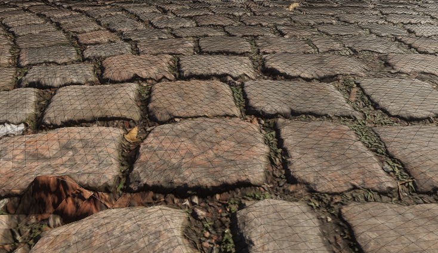
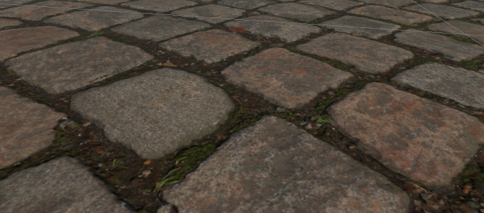
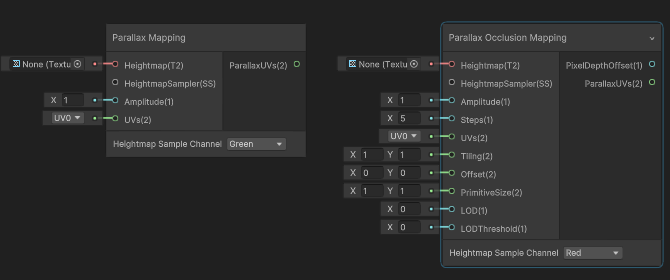

高度置换贴图
根据虚幻提供的最佳实践在VR中，由于法线贴图不会考虑到双目显示和运动，它提供的效果和视差贴图比起来差距很大。对应到Unity中，在HDRP的Lit着色器下，指的就是HeightMap。
下面罗列一下使用HeightMap的一些注意事项。
置换模式
大体分两类，一种是将高度图映射到顶点上，顶点置换，还一种是在像素级别的置换。
顶点置换
简单易懂，效果也很好，缺点是要求模型有很多顶点才有比较好的效果。
或者使用曲面细分，增加很多的顶点，效果也不错，缺点是当头显摄像机移动时，细分的顶点会发生变动，体现在视觉上就是模型的顶点在跳动。

像素置换
后者在较高的迭代次数下，效果也不错。
具体的实现可以参考视差贴图。
Unity的HDRP具体采用的方案叫做陡峭视差映射(Steep Parallax
Mapping)。
这里贴一张关键的图：

这里要注意在使用时，有两个关键的参数不要忘记：Primitive Length
Primitive Width，表示实际物体的长和宽。如果没有正确填写，就会出现物体下沉或者漂浮的情况。同时为了准确的显示高度对深度的影响，Depth Offset也要开启，这会修改实际写入深度图的深度。写入的深度同时也会影响各种平面空间的效果，比如屏幕空间阴影。
URP呢
URP虽然也提供了HeightMap，但从效果来看，应该只是简单的视差贴图映射，和HDRP默认的陡峭视差映射差距很大。

但如果使用ShaderGraph，还是提供了两种视差映射。

前者就是简单的视差映射，后者的效果就和HDRP一样。
但很遗憾，这里虽然给出了Depth Offset，但目前的URP的节点还无法使用。
也就是说目前（2022.2.0），想要在URP下使用PDO（Pixel Depth
Offset），只有自己写了，这里有个栗子。
这里挖个坑，等到BlockShader成熟了，就用BlockShader写一遍。